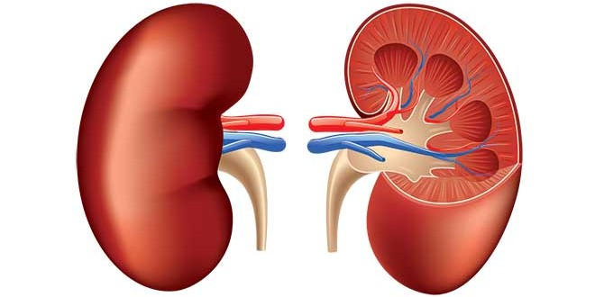
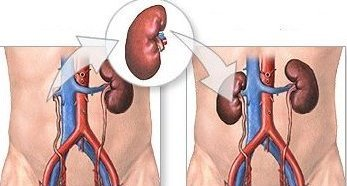

Kidney and Diabetic Clinic
Kidney and Diabetic ClinicWHY CHOOSE US?
check_circleDr Dharmendra Prasad is one of the best Nephrologist and Kidney Specialist
in the state of Bihar.
check_circleFirst DM Nephrologist in the North Bihar Region.
check_circleDone MBBS from PMCH,Patna with 3 Gold Medals.
check_circleDone MD (Medicine) Degree from Prestigious All India Institute of Medical Sciences (AIIMS),New Delhi.
check_circleAlso done Senior Residence from AIIMS,New Delhi.
check_circleCompleted DM (Nephrology) Degree from Prestigious SMS Medical College,Jaipur.
check_circleFirst DM Nephrologist in the North Bihar Region.
check_circleDone MBBS from PMCH,Patna with 3 Gold Medals.
check_circleDone MD (Medicine) Degree from Prestigious All India Institute of Medical Sciences (AIIMS),New Delhi.
check_circleAlso done Senior Residence from AIIMS,New Delhi.
check_circleCompleted DM (Nephrology) Degree from Prestigious SMS Medical College,Jaipur.
Experienced Doctor
Affordable Price
Dedicated to Kidney-Disease
Supportive Staffs
MEDIA INTERACTIONS
Dr. Dharmendra Prasad interacts NDTV 24×7 for a Short Advisory Interview over Kidney Diseses.
OUR SPECIALIZATIONS

CHRONIC KIDNEY DISEASE
Chronic Kidney Disease is a type of Kidney Disorder Wherein there continuous and slow loss of kidney Function is Observed. over a Prolonged period. At early Stages, No Symptoms are Observed. A person having Chronic Kidney Disease observes his/her legs swelled up, feeling of tiredness is Usual, Vomitting and Undesire of taking Food. Major causes for Chronic Kidney Disease are Diabetes Mellitus, High Blood Pressure and Glomerulonephritis.
DIABETES
Diabetes to be more scientific, Diabetes Mellitus is a group of Metabolic Malfunctions in Diabetes, The blood Sugar Level remains Higher over a long Period of time. A person having increase blood Sugar Level feels more Thirsty, Urge to eat more than usual and gets Frequent Urinations. This disease is caused due to malfunctioning of Pancreas, or due to Body cells not responding to the Insulin released by Pancreas in Extreme cases, Pancreas stops Producing Insulin At All.
DIALYSIS
Dialysis is a process of Refining Blood artificially by removing toxins (Creatine and Urea), solutes, and free Water from Blood. Dialysis is taken by a person whose kidneys are unable to Purify Blood in a Natural way. Dialysis is given to a person whose kidneys are rapidly Loosing ability of performing Kidney functions Properly or to a Person who has reached at Stage-5 of Chronic Kidney Disease.

KIDNEY TRANSPALTATION
Kidney transplantion is a surgical procedure for persons whose Kidney has Stopped working. Kidneys help to filter out the waste from the blood and remove it from the body through it through the Process of Urination. The Filter Process also helps in maintaining Body’s fluid and electrolyte balance. If the Kidneys Stop working, waste builds up in the Body and can be Dangerous to the Body and Hence, It needs a Kidney Transplation.
Quick Links
What medecine are you Taking? Know your Medicine Well - 1mg.com
Looking For What??? Your Personal Health Advisor is Here -myhealth.com
Medicine isn't Available?| Get your Medicine your Doorstep -mchemist.com
Health is Happiness-An Article -healthy.com